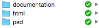
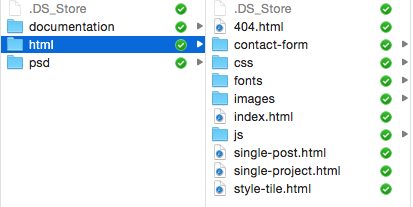
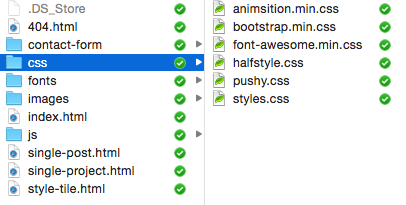
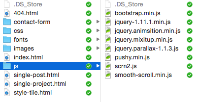
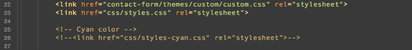
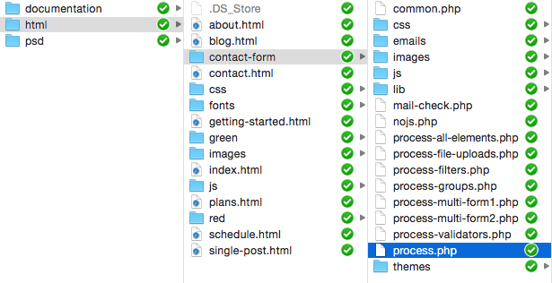
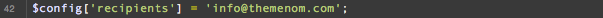

Thank you for purchasing this template. If you have any questions that are beyond the scope of this help file, please feel free to email via our user page contact form themeforest.net/user/rodbor or themenom.ticksy.com.
V1.1 (Apr 10, 2015) . Added a new theme color (cyan) . Added a close button on the nav menu V1.0 (Mar 24, 2015) . Initial release
Unzip your downloaded file and you'll find:

documentation - The files you are reading now.
psd - Photoshop template containing the design.
html - All HTML, CSS, JS and PHP files needed.
Open the html folder and you'll see:

This template was built using Bootstrap (v3.3.1).
You'll need to open and edit the html files to add your content. A basic knowledge of HTML/CSS is required.
To costumize colors, fonts, etc use the CSS files:

animsition.min.css - Used by the loader and animations plugin (jquery.animsition.min.js).
bootstrap.min.css - Minified CSS file used by Bootstrap.
font-awesome.min.css - Used by the social icons.
halfstyle.css - Used in the 404 page to style the text.
pushy.css - Used by navigation menu.
styles.css - The main CSS file with typography and other styles.
This template imports the following Javascript files, wich you can find at the bottom of the HTML pages:

bootstrap.min.js - Used by Bootstrap.
jquery-1.11.1.min.js - Javascript library that greatly reduces the amount of code that you must write.
jquery.animsition.min.js - Responsible for the loader and the fade when browsing pages.
jquery.parallax-1.1.3.js - Responsible for the parallax effects.
jquery.mixitup.min.js - Enables the the filtering in the work section.
pushy.min.js - Used by the navigation menu.
scrn2.js - Use this file in case you want to change some scritps behaviour or some parameters.
smooth-scroll.min.js - Enables smooth scroll in internal page links.
To change to a different theme color you only need to edit some files.
First open the html files and uncomment line 26:

Do this in every HTML file.
Next, if you want to, you just need to replace a few images with the updated ones. You can find them on the html -> images folder
To configure the form to send messages to your email address you have to open the file process.php in the contact-form folder:

Go to line 42 and you'll find:

Replace info@themenom.com with your email address
The fonts used in this template are free, and you only need to download them to work with Photoshop file.
Once again, thank you so much for purchasing this template. As I said at the beginning, I'd be glad to help you if you have any questions relating to this theme. No guarantees, but I'll do my best to assist.
Rodrigo Borges